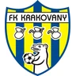

Posledný zápasU17 Mladší dorast
 FC Topoľčany U17domáci
FC Topoľčany U17domáciVýsledok 2:3
 MFC SPARTAK Bánovce nad Bebravouhostia
MFC SPARTAK Bánovce nad BebravouhostiaPrehrapolčas 2:0
Návrh webu · nie je to oficiálna stránka klubu
III. liga U17 ZsFZ, 13. miesto zo 16
Posledný zápasU17 Mladší dorast
FC Topoľčany U17domáciVýsledok 2:3
MFC SPARTAK Bánovce nad BebravouhostiaPrehrapolčas 2:0
4–2–9výhry, remízy a prehry vo všetkých súťažiach, skóre 27:36

FK Krakovany doma, 19. kolo výkop 12:30III. liga U17 ZsFZ
| # | Tím | Z | V | R | P | Skóre | B |
|---|---|---|---|---|---|---|---|
| 1 | 15 | 14 | 1 | 0 | 62:9 | 43 | |
| 2 | 15 | 13 | 0 | 2 | 80:8 | 39 | |
| 3 | 15 | 11 | 0 | 4 | 51:19 | 33 | |
| 4 | 15 | 9 | 2 | 4 | 39:24 | 29 | |
| 5 | 15 | 9 | 1 | 5 | 49:27 | 28 | |
| 6 | 15 | 8 | 3 | 4 | 34:20 | 27 | |
| 7 | 15 | 8 | 2 | 5 | 44:39 | 26 | |
| 8 | 15 | 6 | 2 | 7 | 30:32 | 20 | |
| 9 | 15 | 6 | 2 | 7 | 37:40 | 20 | |
| 10 | 15 | 5 | 2 | 8 | 20:31 | 17 | |
| 11 | 15 | 5 | 2 | 8 | 22:34 | 17 | |
| 12 | 15 | 5 | 0 | 10 | 28:44 | 15 | |
| 13 | 15 | 4 | 2 | 9 | 27:36 | 14 | |
| 14 | 15 | 3 | 3 | 9 | 36:57 | 12 | |
| 15 | 15 | 2 | 2 | 11 | 14:82 | 8 | |
| 16 | FK Krakovany | 15 | 0 | 0 | 15 | 5:76 | 0 |
Hráči, ktorí v kalendárnom roku 2026 nastúpili alebo boli v nominácii na zápas (podľa Sportnetu). Pri mládeži uvádzame len mená.